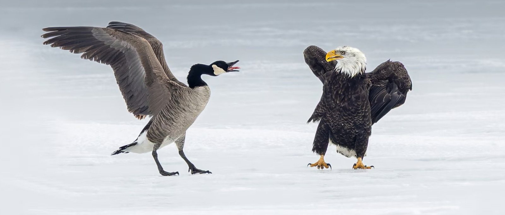

Top Stories头条20
- 1Jay-Z to headline 2027 Super Bowl halftime showJay-Z 成为 2027 年超级碗中场秀的主角CBC
- 2Agent of author Steven Galloway says sex assault allegations derailed promising career作家史蒂文·加洛韦的经纪人表示，性侵犯指控使他前途光明的职业生涯脱轨CBC
- 3Trump administration tries to prosecute former FBI director James Comey for 3rd time特朗普政府第三次试图起诉前联邦调查局局长詹姆斯·科米CBC
- 4The U.S. put surveillance drones in the Great Lakes, and this border town mayor isn't happy美国在五大湖部署无人侦察机，这个边境小镇市长不高兴了CBC
- 5How this Brooklyn bar owner had Conan O'Brien in stitches on SubwayTakes这位布鲁克林酒吧老板是如何在 SubwayTakes 上让柯南·奥布莱恩 (Conan O'Brien) 紧张不已的CBC
- 6Elvis still taking care of business as lawsuit alleges Anthropic used his songs to train AI埃尔维斯仍在处理业务，诉讼指控 Anthropic 使用他的歌曲来训练人工智能CBC
- 7Microsoft gives voluntary buyout offer to about 60,000 employees微软向约 6 万名员工提供自愿买断要约CBC
- 8This 3-year-old scored 10 goals. Then police showed up at his soccer game这个3岁的孩子打进了10个进球。然后警察出现在他的足球比赛现场CBC
- 9Police locate vehicle allegedly used by Toronto mother to abduct 3 children警方找到涉嫌多伦多母亲绑架3名儿童的车辆CBC
- 10Quebec's Spa Nordik introduces new safety measures following sexual assault allegations魁北克 Spa Nordik 在性侵犯指控后推出新的安全措施CBC
- 11Walter Koenig, Ensign Chekov on original Star Trek series, dead at 90原版《星际迷航》系列中的契诃夫少尉沃尔特·科尼格去世，享年 90 岁CBC
- 12Canada's Eric Bauza, modern voice of Bugs Bunny, Daffy Duck and others, dead at 46为兔八哥、达菲鸭等人配音的加拿大歌手埃里克·鲍扎 (Eric Bauza) 去世，享年 46 岁CBC
- 13Video of man helping homeless couple should inspire compassion and change, building manager says建筑经理表示，男子帮助无家可归夫妇的视频应该激发同情心和改变CBC
- 14The National | U.S.-Canada trade talks intensifyThe National |美国与加拿大贸易谈判愈演愈烈CBC
- 15Keanin Loomis declares victory in Hamilton mayoral race, with Horwath trailing in 3rd基宁·卢米斯 (Keanin Loomis) 宣布汉密尔顿市长竞选获胜，霍沃斯 (Horwath) 落后第三名CBC
- 16First Nations-first ministers' meeting brings funding announcements and mixed reviews原住民优先部长会议带来资金公告和褒贬不一的评论CBC
- 17Toronto re-elects Olivia Chow as mayor, beating out challenger Brad Bradford多伦多再次选举周奥利维亚 (Olivia Chow) 击败挑战者布拉德·布拉德福德 (Brad Bradford) 担任市长CBC
- 18Canada-wide freeze on Crime Stoppers programs, partnerships surges to 35 agencies加拿大范围内冻结灭罪计划，合作伙伴激增至 35 个机构CBC
- 19Canada-U.S. trade talks intensifying but wide gap remains, sources say消息人士称，加拿大与美国的贸易谈判正在加剧，但仍存在巨大分歧CBC
- 20Air Canada blamed maintenance issues to deny compensation. Records show it wanted planes for other routes加拿大航空将责任归咎于维护问题，拒绝赔偿。记录显示它需要飞机飞往其他航线CBC
Canada加拿大20
- 21B.C. NDP's defeat reflected in low voter turnout: political scientists公元前新民主党的失败反映在选民投票率低下：政治学家CBC
- 22Online gambling brings in roughly $56M for Alberta since July launch自 7 月推出以来，在线博彩为艾伯塔省带来了约 5600 万美元的收入CBC
- 23'Crypto King' trial hears recording of Aiden Pleterski admitting $300M fund 'never existed'“加密之王”审判听取了艾登·普莱特斯基 (Aiden Pleterski) 的录音，承认 3 亿美元的基金“从未存在”CBC
- 24Horse-drawn carriages are still a tradition in some Canadian cities马车仍然是加拿大一些城市的传统CBC
- 25Point May, N.L. residents rally for a whale-sized weekend rescue荷兰五月角居民集会进行鲸鱼规模的周末救援CBC
- 26A new cancer drug costs as much as a home down payment each month. Doctors say that's greed, not health care一种新的抗癌药物每月的费用相当于房屋首付。医生说那是贪婪，而不是医疗保健CBC
- 27Fact check: Who's behind the fake images of Jagmeet Singh on X?事实核查：谁是 X 上 Jagmeet Singh 假照片的幕后黑手？CBC
- 28The polls have been counted in the 2026 London election, Josh Morgan re-elected as mayor2026年伦敦大选民调已计入 乔什·摩根连任市长CBC
- 29Fred Francis wins Windsor, Ont., mayoral race, CBC News projects弗雷德·弗朗西斯 (Fred Francis) 赢得安省温莎市市长竞选，CBC 新闻项目CBC
- 30Scott Hamilton wins in Cambridge, Shannon Weber celebrates in Waterloo斯科特·汉密尔顿在剑桥获胜，香农·韦伯在滑铁卢庆祝CBC
- 31Sudbury incumbent Paul Lefebvre delivers victory speech萨德伯里现任议员保罗·列斐伏尔发表胜选演讲CBC
- 32Mark Sutcliffe has been re-elected Ottawa mayor, CBC News projects加拿大广播公司新闻报道马克·萨克利夫再次当选渥太华市长CBC
- 33City loses bid for 768 individual trials on damages for taxi plate holders in class action市政府在集体诉讼中输掉了 768 项关于出租车牌照持有者损害赔偿的个人审判CBC
- 34Friends and family pay tribute to Sudbury woman who died in hunting incident near Ottawa朋友和家人向在渥太华附近狩猎事件中丧生的萨德伯里妇女致敬CBC
- 35More than 511,000 Ontarians connected to family doctors since 2025: health minister卫生部长：自 2025 年以来，已有超过 511,000 名安省人与家庭医生建立了联系CBC
- 36Ontario legislature returning after 21 weeks with new faces, rejigged cabinet, cloud of scandal安大略省立法机关在 21 周后回归，新面孔、内阁重组、丑闻云集CBC
- 37Ottawa drone makers tool up for increased defence budget渥太华无人机制造商准备增加国防预算CBC
- 38Sweet food, sour comments: The realities of posting restaurant content on social media甜食，酸味评论：在社交媒体上发布餐厅内容的现实CBC
- 39Kitigan Zibi athletes honoured at national gala for contributions to sportKitigan Zibi 运动员因对体育的贡献而在国家盛会上受到表彰CBC
- 40Woman struck by vehicle in Kanata has life-threatening injuries卡纳塔市一名妇女被车辆撞伤，伤势危及生命CBC
Toronto多伦多20
- 41Tides miss out on NSL playoffs after draw with AFC Toronto泰德队战平多伦多亚足联后无缘NSL季后赛CBC
- 42Brampton man arrested, charged in connection with fatal stabbing in Mississauga布兰普顿男子被捕，被指控与密西沙加致命刺伤事件有关CBC
- 43Toronto man sentenced to life with no chance of parole for 16 years in death of filmmaker多伦多男子因电影制片人死亡被判终身监禁，16年内不得假释CBC
- 441 dead, 1 critically injured following weekend fire at home in Barrie, police say警方称，巴里周末发生家中火灾，造成 1 人死亡、1 人重伤CBC
- 45OPP investigating man's death at Gravenhurst, Ont., prisonOPP 调查安省格雷文赫斯特监狱男子死亡事件CBC
- 461 dead following 3-vehicle crash on Highway 401 in Scarborough: OPP士嘉堡 401 号高速公路发生三车相撞事故，造成 1 人死亡：OPPCBC
- 47Ontario offers free flu, COVID-19 shots for general public starting Monday安大略省从周一开始为公众提供免费流感、COVID-19 疫苗接种CBC
- 4823-year-old dead, 2 others to hospital following 3-vehicle crash in Brock, Ont.: police安省布罗克市发生三车相撞事故，23 岁男子死亡，另外 2 人被送往医院CBC
- 49Stabbed man dies after party in Mississauga industrial building: police密西沙加工业大楼聚会后被刺伤男子死亡：警方CBC
- 50Voter turnout in Peel region tends to be low. Meet the students trying to change that皮尔地区的选民投票率往往较低。认识那些试图改变这一现状的学生CBC
- 51Toronto artist brings ‘spooky’ to city’s west-end through monster exhibition多伦多艺术家通过怪物展览为城市西区带来“幽灵”CBC
- 52Transit a 'glaring oversight' for Durham region candidates, some riders and advocates say一些乘客和支持者表示，交通对达勒姆地区候选人来说是“明显的监督”CBC
- 53Ford says he 'can't wait' for U.S. midterms福特表示他“等不及”美国中期选举CBC
- 54Toronto charity holds event providing free dental care, haircuts to unhoused people多伦多慈善机构举办活动，为无家可归的人提供免费牙科护理和理发CBC
- 55Olivia Chow wins Toronto's mayoral race周奥利维亚 (Olivia Chow) 赢得多伦多市长竞选CBC
- 56Mayor of Hamilton 2026 election live results汉密尔顿市长 2026 年选举现场结果CBC
- 57Election day in Hamilton: polls close as voters wait to learn who's on their new council汉密尔顿选举日：投票结束，选民等待了解新议会成员名单CBC
- 58Polls close in Niagara as residents deciding on mayoral, councillor, trustee winners尼亚加拉投票结束，居民决定市长、议员、受托人获胜者CBC
- 59Some of Hamilton's recreation centre spaces to close for Oct. 26 muncipal election汉密尔顿的部分娱乐中心空间将因 10 月 26 日市选举而关闭CBC
- 60Niagara artist paints 'love letter to Canada' on retired classic airplane in her Wainfleet, Ont., yard尼亚加拉艺术家在她位于安大略省温弗利特的院子里的退役经典飞机上画了“写给加拿大的情书”CBC
Burlington & Oakville伯灵顿·奥克维尔15
- 61Burlington community weighs in on North Church Street Area Plan伯灵顿社区参与北教堂街区域规划FOX8 WGHP
- 62Oakville voters choose a new mayor奥克维尔选民选出新市长INhalton
- 63It's election day in Oakville — follow live municipal election results right here今天是奥克维尔的选举日 — 在这里关注实时市政选举结果Inside Halton
- 64BREAKING: Jeff Knoll elected Oakville's next mayor突发新闻：杰夫·诺尔（Jeff Knoll）当选奥克维尔下一任市长Oakville News
- 65LIVE RESULTS: Incumbent mayor out to early lead in Burlington实时结果：现任市长在伯灵顿早期领先Inside Halton
- 66Marianne Meed Ward re-elected as mayor of Burlington玛丽安·米德·沃德再次当选伯灵顿市长CHCH
- 67UPDATES: Live coverage of Oakville's 2026 municipal election更新：奥克维尔 2026 年市政选举的现场报道Oakville News
- 68Marianne Meed Ward will lead Burlington as mayor for four more years玛丽安·米德·沃德 (Marianne Meed Ward) 将继续担任伯灵顿市长四年The Spec
- 69Here are the 2026 Municipal Election results for Halton-area cities, towns以下是荷顿地区城市、城镇 2026 年市政选举结果CHCH
- 70LIVE NOW: Oct. 26 election night coverage for Burlington, Oakville, Milton, Halton Hills立即直播：10 月 26 日选举之夜报道伯灵顿、奥克维尔、米尔顿、荷顿山Inside Halton
- 71Voters say they want big changes in St. Catharines, Hamilton and Burlington选民表示他们希望圣凯瑟琳斯、汉密尔顿和伯灵顿发生重大变化CHCH
- 72OAKVILLE VOTES 2026: Live election results and winners2026 年奥克维尔投票：实时选举结果和获胜者Oakville News
- 73Burlington mayor picks new chief of police伯灵顿市长选出新警察局长VTDigger
- 74Live 2026 Burlington, Oakville, Milton and Halton Hills municipal election results for mayor, council, and school board trustees为市长、议会和学校董事会受托人直播 2026 年伯灵顿、奥克维尔、米尔顿和荷顿山市政选举结果insauga.com
- 7591-year-old pedestrian dead after being struck by a car in Burlington, Ont., while walking dog, police say警方称，安省伯灵顿 91 岁行人遛狗时被车撞身亡CBC
World国际18
- 76UN commission says Israel has continued to commit genocide in Gaza since truce联合国委员会称，自停战以来，以色列继续在加沙实施种族灭绝CBC
- 77Nigeria Ebola patient flown to Switzerland, Congo health worker killed as 4 countries deal with outbreak尼日利亚埃博拉患者飞往瑞士，刚果卫生工作者在四个国家应对疫情时丧生CBC
- 78Anthropic files for potentially biggest IPO ever, even as CEO warns of AI risks to humanity尽管首席执行官警告人工智能对人类构成风险，Anthropic仍申请有史以来规模最大的IPOCBC
- 79Jordan says its air force undertook strikes against militant hideouts in Syria约旦称其空军对叙利亚武装分子藏身之处进行了打击CBC
- 80U.S. officials accuse Canada of midterm meddling — but Trump has endorsed foreign candidates美国官员指责加拿大干预中期选举，但特朗普却支持外国候选人CBC
- 81Lula re-elected in Brazil as Bolsonaro rejects results卢拉在巴西再次当选，博尔索纳罗拒绝结果CBC
- 82Serbia's longtime strongman Vučić concedes election defeat to student-led opposition塞尔维亚长期强人武契奇承认选举失败于学生领导的反对派CBC
- 83Carney's geopolitical ambitions tested in defence industry co-operation with Turkey卡尼的地缘政治野心在与土耳其的国防工业合作中经受考验CBC
- 84Ukraine says its military did not violate Starlink terms, disputing Elon Musk claim乌克兰称其军方没有违反星链条款，对埃隆·马斯克的说法提出异议CBC
- 85Canada needs concrete results from EU summit this week, former envoy says前特使表示，加拿大需要本周欧盟峰会取得具体成果CBC
- 86Venezuela's opposition leader Machado returns after months in exile委内瑞拉反对派领袖马查多流亡数月后返回CBC
- 87Israeli military conducts massive West Bank operation, days before Israel election以色列大选前几天，以色列军队进行大规模西岸行动CBC
- 88Netanyahu 'fighting for his political life' in 1st Israeli vote since Oct. 7. He might still survive内塔尼亚胡在自 10 月 7 日以来的第一次以色列投票中“为自己的政治生命而战”。他可能仍然生存CBC
- 89Tennessee may try to execute Christa Pike again. The state could face legal hurdles田纳西州可能会再次尝试处决克里斯塔·派克。国家可能面临法律障碍CBC
- 90'They’re the nicest people': Obama mocks Trump for hitting Canada with tariffs“他们是最好的人”：奥巴马嘲笑特朗普对加拿大征收关税CBC
- 91Musk says he was behind Starlink speed restriction in Ukraine马斯克称他是乌克兰星链限速的幕后黑手CBC
- 92Tens of thousands march in France as protests continue over schools and living costs法国数万人游行，抗议学校和生活费用问题仍在继续CBC
- 93A polarized Brazil heads to presidential vote with economy, corruption top of mind两极分化的巴西即将举行总统选举，经济和腐败是首要考虑因素CBC
Politics政治15
- 94'Time to abolish the Indian Act,' Manitoba premier tells PM in historic meeting with chiefs曼尼托巴省总理在与酋长的历史性会议上告诉总理，“是时候废除《印第安人法案》了”CBC
- 95Women 'risk being left behind' in AI push, advocates warn Canadian lawmakers倡导者警告加拿大立法者，女性在人工智能推动中“面临落后的风险”CBC
- 96U.K. opts against joining Canada-led defence bank, pledges co-operation英国选择不加入加拿大领导的国防银行，但承诺合作CBC
- 97Canada receives first F-35 jets from U.S., as full order remains under review加拿大从美国接收第一架 F-35 飞机，完整订单仍在审查中CBC
- 98First Nations want tangible results as 'historic' first ministers' meeting opens随着“历史性”第一次部长会议开幕，原住民希望取得切实成果CBC
- 99A 'reset' or 'one and done'? First Nations and first ministers set to hold historic meeting“重置”还是“一劳永逸”？原住民和首席部长将举行历史性会议CBC
- 100Will the Alberta referendum feed a more polarized immigration debate?艾伯塔省公投是否会加剧两极分化的移民辩论？CBC
- 101Nature vs. bulldozers: The environment minister's balancing act at UN nature summit自然与推土机：环境部长在联合国自然峰会上的平衡之举CBC
- 102Rapid spread of fire was main factor in CFB Wainwright deaths, injuries: top military commander高级军事指挥官：火势迅速蔓延是温赖特CFB伤亡的主要原因CBC
- 103Conservatives accuse government of 'cooking the books' over immigration data presentation保守派指责政府在移民数据的表述上“做假账”CBC
- 104Carney says 'direct casualties' are result of Ukraine's restricted access to Musk's Starshield卡尼称“直接伤亡”是乌克兰限制进入马斯克的星盾造成的CBC
- 105Trump to swap some tariffs on Canadian goods amid midterm pressure特朗普将在中期压力下取消对加拿大商品的部分关税CBC
- 106Claims that Canada is interfering in U.S. midterms have 'no merit,' Carney says卡尼表示，加拿大干预美国中期选举的说法“毫无根据”CBC
- 107Carney defends doing business with countries that don’t share Canada’s values卡尼捍卫与不认同加拿大价值观的国家开展业务CBC
- 108Searches of cellphones, laptops by U.S. customs up more than 32% so far this year今年迄今为止，美国海关对手机和笔记本电脑的搜查量增加了 32% 以上CBC
Business财经17
- 109WestJet signs code-share partnership deal with Qatar Airways西捷航空与卡塔尔航空签署代码共享合作协议CBC
- 110High Liner Foods to be bought by Umios in deal valued at $804MUmios 将收购 High Liner Foods，交易价值 8.04 亿美元CBC
- 111The Bank of Canada's inflation dilemma加拿大央行的通胀困境CBC
- 112Loblaw CEO apologizes to 2 million shoppers for personal data hack, offers free credit monitoringLoblaw 首席执行官因个人数据被盗向 200 万购物者道歉并提供免费信用监控CBC
- 113Consumer agency says unclear bank fees can add up for customers消费者机构表示，不清楚的银行费用可能会增加客户的费用CBC
- 114Canadian planemaker Bombardier investing $270M in U.S. expansion加拿大飞机制造商庞巴迪投资 2.7 亿美元扩张美国市场CBC
- 115What is PHP, and how did a flaw in its code lead several websites to go dark this week?什么是 PHP？其代码中的缺陷是如何导致本周多个网站关闭的？CBC
- 116Judge dismisses farmers' class action over end to Canadian Wheat Board monopoly more than a decade ago法官驳回农民针对十多年前结束加拿大小麦委员会垄断而提起的集体诉讼CBC
- 117Canada Post starting weekend parcel delivery in Toronto, Montreal and Ottawa this fall加拿大邮政将于今年秋天开始在多伦多、蒙特利尔和渥太华进行周末包裹递送CBC
- 118Meta board placates Zuckerberg after threat to leave California if voters approve wealth tax measure元董事会安抚扎克伯格，威胁称如果选民批准财富税措施，他将离开加州CBC
- 119Rogers to charge new fee for bills paid by credit card, says practice is 'increasingly common'罗杰斯将对信用卡支付的账单收取新的费用，称这种做法“越来越普遍”CBC
- 120Minister gives Stelco owner 15 days to reverse layoffs before turning to the courts部长给 Stelco 所有者 15 天的时间扭转裁员局面，然后再向法院提起诉讼CBC
- 121Edmonton-based video game studio BioWare shutting down after more than 30 years埃德蒙顿视频游戏工作室 BioWare 在 30 多年后关闭CBC
- 122Airbnb limiting the checkout chores hosts can ask guests to doAirbnb 限制房东可以要求房客做的结账杂务CBC
- 123Canadian government sites among those offline after flaw identified in widely used computer language广泛使用的计算机语言中发现缺陷后，加拿大政府网站被关闭CBC
- 124BMO CEO says don't give AI agents your banking infoBMO 首席执行官表示不要向人工智能代理提供您的银行信息CBC
- 125Carney, Ford announce $8.7B partnership to support steel, auto, critical mineral sectors卡尼和福特宣布建立 8.7B 美元的合作伙伴关系，以支持钢铁、汽车和关键矿产行业CBC
Science & Tech科技19
- 126Is this Quebec-developed fruit the 'apple of the future'?这种魁北克开发的水果是“未来的苹果”吗？CBC
- 127Snowy owls are now a 'sensitive species' in Alberta雪鸮现在是艾伯塔省的“敏感物种”CBC
- 128Can millions of people live on the moon? These scientists say yes — but not for very long数百万人可以在月球上生活吗？这些科学家说是的——但不会持续很长时间CBC
- 129The Marineland belugas keep dying. Was it a mistake to move them?海洋世界的白鲸不断死亡。移动它们是一个错误吗？CBC
- 130Scientists put a dying coral next to a healthy one — and watched it heal before their eyes科学家们将垂死的珊瑚放在健康的珊瑚旁边，并看着它在他们眼前愈合CBC
- 131Europe's killer heat this summer claims record 50,000 lives, study suggests研究表明，今年夏天欧洲的致命高温夺去了创纪录的 5 万人的生命CBC
- 132Developer wants to build 500 modular homes on roof of struggling Sask. mall开发商希望在陷入困境的萨斯喀彻温省的屋顶上建造 500 套模块化住宅。购物中心CBC
- 133Hundreds of flights cancelled, schools closed as Typhoon Champi hits Taiwan台风“占比”袭击台湾数百航班取消、学校停课CBC
- 134The haunting call of Canada's common loon is becoming less common amid widespread declines, study suggests研究表明，加拿大潜鸟的令人难以忘怀的叫声在数量普遍下降的情况下变得越来越少CBC
- 135Tibet earthquake kills at least 16西藏地震已造成至少16人死亡CBC
- 136Wolf euthanized after rare attack near Cameco site in northern Sask.沃尔夫在萨斯克北部卡梅科遗址附近发生罕见袭击后被安乐死。CBC
- 1371st human case of livestock virus Shamonda reported in France法国报告第一例人畜感染沙蒙达病毒病例CBC
- 138Biologists seek justice for forgotten kingdom of fungi生物学家为被遗忘的真菌王国寻求正义CBC
- 139Rabid skunk bites 'small number' of people in downtown Vancouver: officials温哥华市中心有“少数”人被狂犬病臭鼬咬伤：官员CBC
- 140Carney appoints astronaut Jeremy Hansen to advise government on new space strategy卡尼任命宇航员杰里米·汉森为政府提供新太空战略建议CBC
- 141More than 16 years after BP's Deepwater Horizon disaster, marine life has not recoveredBP 深水地平线灾难发生已超过 16 年，海洋生物尚未恢复CBC
- 142Japan launches spacecraft to mysterious moons of Mars日本向神秘的火星卫星发射宇宙飞船CBC
- 143Canadian who stole a Las Vegas flamingo after drinking '30 to 40' beers convicted of animal cruelty喝了“30到40”啤酒后偷走拉斯维加斯火烈鸟的加拿大人被判虐待动物罪CBC
- 144Bats have a housing crisis. And it's getting worse蝙蝠面临住房危机。而且情况越来越糟CBC
Health健康17
- 145Manitoban denied out-of-province care for rare condition says he's 'tortured every single day'马尼托巴拒绝为罕见疾病提供省外护理，称他“每天都在遭受折磨”CBC
- 146Egg freezing is becoming significantly more popular in Canada冷冻卵子在加拿大越来越受欢迎CBC
- 147In P.E.I., sweeping new strategy takes aim at ‘pervasive drinking culture’在爱德华王子岛，全面的新战略瞄准“普及饮酒文化”CBC
- 148The RDSP was meant to help disabled Canadians save for the future. Yet many don't know it existsRDSP 旨在帮助加拿大残疾人为未来储蓄。然而很多人并不知道它的存在CBC
- 149Inquiry looking into man's death in Edmonton ER hears about too many patients, not enough beds or doctors对埃德蒙顿急诊室一名男子死亡的调查得知，病人太多，床位或医生不足CBC
- 150A novel mRNA cancer vaccine helps cut the chances of melanoma tumor recurrence in major study重大研究发现新型 mRNA 癌症疫苗有助于降低黑色素瘤复发的机会CBC
- 151Long COVID patients 'devastated' by impending changes to virtual care access in B.C.BC省虚拟护理服务即将发生变化，长期感染新冠肺炎的患者“深受打击”CBC
- 152Regina mom hopes new HIV testing program will help others giving birth里贾纳妈妈希望新的艾滋病毒检测计划能够帮助其他人分娩CBC
- 153MPs moving to restrict gambling ads in Canada amid mounting harms由于危害日益严重，加拿大议员开始限制赌博广告CBC
- 154Fears of a pan-African Ebola crisis growing as fourth country reports first case随着第四个国家报告首例埃博拉病例，人们对泛非埃博拉危机的担忧日益加剧CBC
- 155Ontario cancer patients speak out over disappointment with drug funding decision安大略省癌症患者对药物资助决定感到失望CBC
- 156How do B.C.'s major parties plan to tackle toxic drugs and addictions treatment?BC省主要政党计划如何解决有毒药物和成瘾治疗问题？CBC
- 157Problem gambling jumps, suicides triple in Ontario after expansion of online casinos在线赌场扩张后，安大略省的赌博问题和自杀率增加了两倍CBC
- 158Prolonged, fragile recovery ahead for soldiers severely burned at CFB Wainwright温赖特CFB严重烧伤士兵的恢复过程漫长且脆弱CBC
- 159Nigeria confirms case of Ebola in capital city of Abuja尼日利亚首都阿布贾确诊埃博拉病例CBC
- 160As Christina Applegate reveals MS misdiagnosis, doctor warns of wrong treatment risks克里斯蒂娜·艾伯盖特 (Christina Applegate) 揭露多发性硬化症误诊，医生警告错误治疗的风险CBC
- 161Plasma donation company Grifols begins phased reopening of centres after 2-month hiatus血浆捐赠公司 Grifols 在中断两个月后开始分阶段重新开放中心CBC
Arts文艺16
- 162Chris Brown gets suspended 8-month sentence for 2023 nightclub attack, avoiding jail克里斯·布朗 (Chris Brown) 因 2023 年夜总会袭击事件被判缓刑 8 个月，避免入狱CBC
- 163Gamers, developers praise BioWare's envelope-pushing games following 'heartbreaking' closure游戏玩家和开发者称赞 BioWare 的游戏在“令人心碎”的关闭后具有突破性CBC
- 164Fjord's Sebastian Stan, Cristian Mungiu on making a movie no one can agree onFjord 的塞巴斯蒂安·斯坦 (Sebastian Stan) 和克里斯蒂安·蒙吉 (Cristian Mungiu) 谈制作一部无人同意的电影CBC
- 165Stop-motion movie Wildwood is a staggering masterpiece. It's a miracle it exists at all定格动画电影《怀尔德伍德》是一部令人惊叹的杰作。它的存在真是一个奇迹CBC
- 166James Bond screen tests reportedly happening in London this weekend据报道，詹姆斯·邦德本周末在伦敦进行试镜CBC
- 167Miley Cyrus shaves fan's head after her breast cancer diagnosis麦莉赛勒斯在诊断出乳腺癌后为粉丝剃光头CBC
- 168Yaga TV show packed with lore and Canadian talent — including Hudson WilliamsYaga 电视节目充满了传说和加拿大人才 - 包括哈德森·威廉姆斯CBC
- 169Emmy-winning actor Tom Skerritt, with roles in Alien and Top Gun, dies at 93曾出演《异形》和《壮志凌云》的艾美奖得主汤姆·斯凯里特去世，享年 93 岁CBC
- 170Heated Rivalry hitting theatres this November激烈的竞争将于今年十一月上映CBC
- 171'Looksmaxxing' streamer Clavicular pleads not guilty to rape charge“Looksmaxxing”主播锁骨对强奸指控不认罪CBC
- 172Loved You Can See Everything? Thank Canada喜欢《你能看到一切》吗？感谢加拿大CBC
- 173Lord of the Flies reimagined for TV as a darker, more intimate take on the classic novel《蝇王》被重新改编成电视版，对经典小说进行了更黑暗、更亲密的演绎CBC
- 174A Glee reboot is officially happening, and fans are buzzing《欢乐合唱团》重启正式开始，粉丝们欢呼雀跃CBC
- 175From The Matrix to Yaga, Carrie-Anne Moss still believes rejection can open the right door从《黑客帝国》到《雅加》，凯莉-安·莫斯仍然相信拒绝可以打开正确的大门CBC
- 176Dancing with the Stars: Julia Stiles honours Heath Ledger with live tribute与星共舞：朱莉娅·斯蒂尔斯现场致敬希斯·莱杰CBC
- 177Drake denies stealing Janice STFU chorus德雷克否认偷窃珍妮丝 STFU 合唱CBC
Sports体育23
- 178Golden State Valkyries beat the Atlanta Dream to take a 3-2 lead in WNBA Finals金州武神队击败亚特兰大梦想队在WNBA总决赛中以3-2领先CBC
- 179Harry Kane, Alexia Putellas capture Ballon d'Or wins哈里·凯恩、亚历克西娅·普特拉斯夺得金球奖CBC
- 180Potential decisive Game 6 of WNBA Finals moved to Thursday afternoon in Atlanta before NBA contestWNBA 总决赛潜在的决定性第六场比赛在 NBA 比赛之前移至周四下午在亚特兰大举行CBC
- 181Canada to lean on Auger-Aliassime, Shapovalov's championship experience at Davis Cup Final 8加拿大队将依靠沙波瓦洛夫在戴维斯杯八强赛中的夺冠经历CBC
- 182Canadians Ben Silverman, Corey Conners tie for third in Bermuda Championship加拿大人本·西尔弗曼 (Ben Silverman) 与科里·康纳斯 (Corey Conners) 在百慕大锦标赛中并列第三CBC
- 183Former Canucks star Quinn Hughes reaches 500 NHL points in return to Vancouver, amid boos and cheers前加人队球星奎因·休斯 (Quinn Hughes) 在嘘声和欢呼声中返回温哥华，NHL 积分达到 500 分CBC
- 184Sarault finishes 1st, 2nd on final day of Vancouver short track World Tour stop萨罗特在温哥华短道世界巡回赛最后一天获得第一名和第二名CBC
- 185Mia Pante scores brace as Rise defeat Wild, move into final NSL playoff spot米娅·潘特 (Mia Pante) 梅开二度，Rise 击败 Wild，进入 NSL 季后赛决赛CBC
- 186Americans Claire Pease, Reese Esponda finish 1-2 in floor exercise at gymnastics worlds美国选手克莱尔·皮斯、里斯·埃斯彭达在体操世界自由体操比赛中获得 1-2 名CBC
- 187Olympic champ Shaidorov only 10th as Siao wins figure skating Grand Prix opener奥运冠军沙伊多罗夫仅排名第10 萧勇夺花样滑冰大奖赛揭幕战CBC
- 188Brazil's Olympic skiing champion Pinheiro Braathen wins season-opening giant slalom巴西奥运滑雪冠军皮涅罗·布拉森 (Pinheiro Braathen) 赢得赛季开幕大回转比赛冠军CBC
- 189Frelick, Pratt lift Brewers to 5-4 comeback win over Rays and 2-0 World Series lead弗里利克、普拉特帮助酿酒人队以 5-4 逆转战胜光芒队，并以 2-0 领先世界大赛CBC
- 190Leylah Fernandez climbs 7 spots to 23rd in WTA rankings after Ningbo Open final appearance宁波公开赛决赛后，莱拉·费尔南德斯 WTA 排名上升 7 位至第 23 位CBC
- 191Canadian women win relay gold, Laoun takes 500m silver at short track World Tour opener加拿大女子短道世界巡回赛揭幕战夺得接力金牌，劳恩夺得500米银牌CBC
- 192Canada powers past U.S. for gold at International Para Hockey Cup加拿大队击败美国队夺得国际残疾人曲棍球杯金牌CBC
- 193Golden State Valkyries beat the Atlanta Dream 67-62 to even the WNBA Finals at 2-2金州武神队以67-62击败亚特兰大梦想队，WNBA总决赛2-2平CBC
- 194Canadian women's rugby team scores 2nd straight win over powerhouse England加拿大女子橄榄球队连续第二次战胜强队英格兰队CBC
- 195How this figure skating season will 'set the stage' for Canada's next Olympic generation这个花样滑冰赛季将如何为加拿大下一代奥运选手“奠定基础”CBC
- 196Oilers' Mike Babcock, who 'loved' coaching Leafs, prepares to face old team for first time“热爱”执教叶子队的油人队球员迈克·巴布科克准备首次面对老球队CBC
- 197Connor McDavid is off to a historic start. Could some of Gretzky's records fall this season?康纳·麦克戴维迎来了历史性的开端。格雷茨基的一些纪录会在本赛季被打破吗？CBC
- 198GM Cheveldayoff 'very comfortable' with deal Winnipeg Jets got for goalie Connor Hellebuyck总经理切维尔戴奥夫对温尼伯喷气机队签下守门员康纳·赫勒比克的交易“非常满意”CBC
- 199Habs captain's iron man streak ends, Nick Suzuki to miss 2 to 4 weeks due to injury哈布斯队长的钢铁侠连胜终结，尼克·铃木因伤缺席 2 至 4 周CBC
- 200Penguins forward Ben Kindel, who collapsed 10 minutes into flight, back in Pittsburgh企鹅队前锋本·金德尔在飞行 10 分钟后倒地，回到匹兹堡CBC
